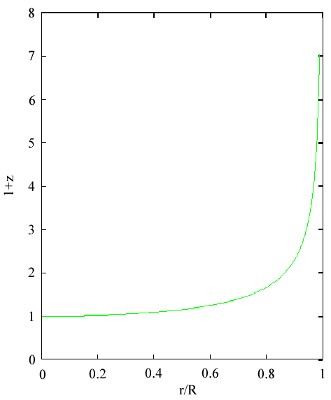
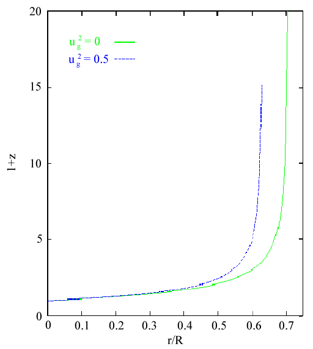
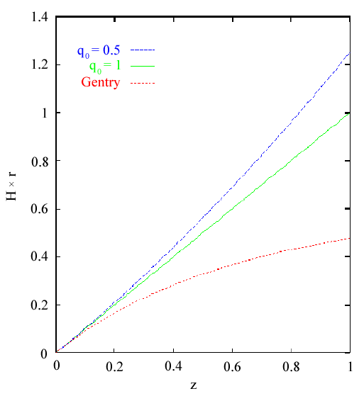

Démystifier la cosmologie de l'« Nouvelle interprétation du décalage vers le rouge » de Robert Gentry
par Ryan Scranton[Liens mis à jour : 24 juillet 2003]

Autres liens :
|
L'objectif de ce FAQ n'est pas de décrire en entier, ni même en partie, la cosmologie du Big Bang standard que le créationniste de la Terre jeune R.V. Gentry entend remplacer par sa Nouvelle Interprétation du Décalage vers le Rouge (NRI). La description du modèle cosmologique standard et les réponses aux questions courantes ont déjà été très compétemment exposées par le professeur Ned Wright dans son FAQ de Cosmologie ; des informations supplémentaires sur la cosmologie standard peuvent être trouvées dans les textes référencés à la fin du FAQ. Plutôt, ce FAQ est destiné à aborder les problèmes de la NRI du Dr. Gentry qui pourraient ne pas être évidents pour quelqu'un non familier avec les domaines de la physique concernés. Le Dr. Gentry a également soumis un pré-imprimé qui s'oppose à la cosmologie standard et en faveur de la NRI, qui sera traité dans une section séparée du reste du modèle du Dr. Gentry.
Le matériel de ce FAQ a été compilé par Ryan Scranton à partir de messages postés sur talk.origins par Sverker Johansson, Steve Carlip, Ken Cox, Mark Kluge et Ryan Scranton. Tous les commentaires peuvent être envoyés à scranton@oddjob.uchicago.edu
Les arguments en bref
Le matériel de ce FAQ, tant celui qui soutient la NRI que celui qui la réfute, est très technique. Pour le lecteur occasionnel, il peut être très difficile, lorsqu'on se trouve face à deux arguments opposés sur un sujet inconnu et compliqué, de déterminer qui a raison, qui a tort ou si les deux parties ne font que des arguments remplis de jargon qui sont dénués de sens. La seule vraie solution à ce problème est de se former sur le matériel concerné afin de prendre une décision éclairée. Cependant, comme la plupart des personnes lisant ceci n'ont pas le temps de suivre les 3 ou 4 années de cours de physique qui seraient nécessaires pour saisir la profondeur des arguments, cette section espère fournir un bref aperçu du reste du FAQ, ainsi que des réponses à quelques questions qui pourraient surgir lorsqu'on tente d'évaluer la validité des arguments présentés ci-dessous.
Le NRI se compose de trois composantes principales :
- Un univers sphérique décrit par la relativité générale einsteinienne avec un centre défini qui ne s'expande ni ne se contracte.
- Une fine coquille d'hydrogène qui entoure l'univers observable.
- Une distribution de matière normale et d'énergie du vide qui est radialement homogène. L'énergie du vide a une masse effective négative, et provoque ainsi une gravité répulsive plutôt qu'attractive.
Les problèmes avec ce modèle sont (au moins) multiples :
| 1.Relativité générale | Le Dr. Gentry affirme que son modèle est « fondé sur un univers régi par la relativité générale à espace-temps statique. Mais en réalité, le modèle est incompatible avec les équations de champ d'Einstein, les équations fondamentales de la relativité générale. |
| 2.« Ajustement fin » | Le NRI ne peut reproduire les caractéristiques observées de l'univers qu'en ajustant manuellement les paramètres du modèle. Par exemple, il obtient la bonne température du rayonnement cosmique micro-ondes uniquement parce que la température peut être fixée à n'importe quelle valeur que le Dr. Gentry souhaite dans son modèle.
De manière plus dramatique, il obtient la « relation de Hubble »---le fait que les galaxies s'éloignent de nous à une vitesse proportionnelle à leur distance---uniquement en choisissant des conditions initiales dans lesquelles cette relation est intégrée. En d'autres termes, le modèle du Dr. Gentry doit ajuster séparément la vitesse de chaque galaxie de l'univers à un certain temps initial de départ pour qu'elle soit juste. |
| 3.Stabilité et cohérence | Dans le modèle du Dr. Gentry, les galaxies sont
toutes en s'éloignant de nous. Pourtant, il suppose également que
la densité des galaxies ne change pas avec le temps, c'est-à-dire que
l'univers ne se « dilue » pas. Cela n'est possible que si
de la nouvelle matière est continuellement créée d'une manière ou d'une autre (comme dans l'ancien
« modèle de l'état stationnaire ») pour remplacer les objets qui
s'éloignent.
L'univers du Dr. Gentry est entouré d'une coquille d'hydrogène chaud qui est censée fournir le rayonnement cosmique micro-ondes observé. Mais cette coquille est assez lourde pour qu'elle devrait s'effondrer vers l'intérieur sous son propre poids, en un temps trop court pour fournir le rayonnement de fond approprié. Pour fournir le bon spectre du rayonnement cosmique micro-ondes (un spectre de corps noir), la coquille d'hydrogène du Dr. Gentry doit être suffisamment épaisse et dense pour être « opaque ». Si vous mettez les chiffres requis par le modèle, la coquille s'avère beaucoup trop fine, presque transparente, et ne peut pas fournir le spectre observé. Le Dr. Gentry exige que sa coquille d'hydrogène qui entoure l'univers observé soit à son tour entourée d'espace vide. Dans une telle configuration, la coquille se refroidira très rapidement à près du zéro absolu ; elle ne restera pas chaude assez longtemps pour fournir le rayonnement de fond observé. |
| 4.Observations | L'une des observations clés que le modèle du Dr.
Gentry tente d'expliquer est la relation décalage-rouge-distance, selon laquelle la lumière des galaxies lointaines est décalée vers l'extrémité rouge du spectre d'une quantité proportionnelle à leur distance. Le modèle donne le bon résultat pour les objets relativement proches, mais s'écarte de la relation observée pour les objets plus lointains, donnant une prédiction qui est clairement écartée par les observations récentes de quasars lointains.
Nous observons que le nombre de quasars chute rapidement à grandes distances. Le modèle du Dr. Gentry possède un mécanisme pour expliquer cela, mais il entre en jeu à des distances qui sont beaucoup trop petites, donnant une prédiction très erronée pour la distribution des quasars. Le modèle de Gentry donne une prédiction pour la brillance de surface des galaxies en fonction de la distance qui semble contredire les observations récentes. (Ces observations sont encore suffisamment difficiles à bien réaliser que ce problème n'est probablement pas fatal.) |
| 5.Observations manquantes | Le modèle standard du big bang explique avec succès les abondances observées des éléments légers, qui sont créés par des réactions nucléaires dans les très chauds stades précoces de l'univers. Le modèle de Gentry doit rejeter ce succès comme une coïncidence et ne propose aucune source alternative pour ces éléments.
Dans le modèle standard du big bang, l'âge de l'univers établit une échelle naturelle pour l'âge des objets anciens (par exemple, les étoiles les plus vieilles). Bien que les détails restent incertains, les âges sont généralement en accord. Dans le modèle de Gentry, cela doit à nouveau être rejeté comme une simple coïncidence. |
| Q : Si les défauts du MNR sont aussi évidents que les rédacteurs du FAQ voudraient le faire croire, pourquoi le Dr Gentry ne les a-t-il pas remarqués ? | R : La réponse la plus cynique serait que le Dr Gentry a ignoré les problèmes du modèle afin de fournir plus de matière aux créationnistes pour leurs efforts visant à entraver la « dangereuse » science comme la cosmologie et l'évolution. Le cas le plus probable est que le Dr Gentry effectuait des travaux en dehors de son domaine d'expertise (géophysique) et qu'il était donc moins susceptible de remarquer des problèmes qui seraient immédiatement apparents pour quelqu'un de familier avec les exigences que la physique impose aux modèles astronomiques et cosmologiques. De même, il n'était peut-être pas aussi au fait des preuves observationnelles qui soutiendraient la cosmologie standard au détriment de son modèle. |
| Q : Alors, comment cela a-t-il pu passer au relecteur si quelqu'un de familier avec le domaine aurait dû repérer ces erreurs ? | R : La réponse simple est que le processus d'examen par les pairs n'est pas parfait ; si tous les articles qui ont réussi à passer par ce processus étaient complètement exempts de défauts et parfaitement cohérents avec toutes les preuves connues, les revues scientifiques seraient extrêmement maigres. Les rapporteurs des articles, bien qu'extrêmement compétents, ne sont pas omniscients. Cependant, les limites du processus d'examen sont bien connues au sein de la communauté scientifique et, en conséquence, la soumission d'une idée n'est que le premier pas vers son acceptation par la communauté dans son ensemble. Une fois qu'une idée a été publiée, il incombe aux autres de vérifier ou de réfuter les affirmations faites dans l'article (de même que les auteurs originaux). Après avoir réussi dans ce processus pour plusieurs itérations, une idée gagne une certaine mesure d'acceptation.
Le modèle du Dr Gentry
Le modèle NRI du Dr Gentry a été présenté pour la première fois dans Modern Physics Letters A. Les normes que les différentes revues appliquent aux articles et aux lettres (qui ne doivent pas être confondues avec les documents de type lettre aux éditeurs) varient considérablement. MPLA, en particulier, a tendance à publier des articles plus courts qui ne seraient peut-être pas appropriés pour la Physical Review, généralement plus prestigieuse, mais elle soumet tout de même ses articles à un examen par les pairs avant publication. Cela contraste avec le prépublication que le Dr Gentry a soumis à l'archive du Laboratoire national de Los Alamos ; la seule condition pour l'acceptation d'un prépublication est une forme d'association avec une institution établie. Bien que le FAQ présente brièvement le modèle du Dr Gentry, les lecteurs sont encouragés à examiner par eux-mêmes sa lettre MPLA et son prépublication LANL.
Dans le modèle cosmologique standard, la distribution de matière à grande échelle de l'univers est supposée isotrope et homogène. Comme l'indique le Dr. Gentry, la première hypothèse a été bien établie par les observations de la distribution angulaire des galaxies dans les relevés de galaxies. D'un autre côté, l'hypothèse d'homogénéité est difficile à vérifier directement en raison du fait que nous ne pouvons (ni maintenant, ni dans un avenir proche ressemblant à quoi que ce soit) observer l'univers depuis un point de vue différent de notre propre galaxie (Il convient de noter, cependant, que si l'homogénéité de la distribution de matière ne peut pas être déterminée directement, elle peut être soutenue indirectement par la vérification des prédictions faites en l'adoptant. Par exemple, la prédiction et l'observation que le rayonnement du fond diffus cosmologique serait isotrope à un très haut degré sont faites en cosmologie standard en utilisant l'hypothèse d'homogénéité). Le NRI élimine l'hypothèse d'homogénéité et postule un univers avec un centre défini, près duquel l'hypothèse d'isotropie est valide. De plus, tandis que la cosmologie standard inclut un univers en expansion dans lequel la distance entre deux coordonnées dans l'espace-temps augmente au fil du temps, le NRI prétend être un univers statique.
La matière dans l'univers NRI est distribuée uniformément dans une sphère centrée sur le centre de l'univers, avec un rayon de 4,365 Gpc (1 Gpc = 109 parsec, 1 parsec = 3,26 années-lumière). Autour de cette sphère se trouve une fine coquille d'hydrogène chaud. Au-delà de la coquille d'hydrogène, la densité de matière est supposée décroître exponentiellement dans la direction radiale. De plus, le NRI fait usage d'une densité d'énergie du vide non nulle. Cette énergie possède une masse négative et agit comme une force répulsive, plutôt que comme la nature attractive normale de la gravité. Ce concept (la « constante cosmologique ») a été introduit pour la première fois par Albert Einstein afin de maintenir les solutions de ses équations du champ de la relativité générale statiques, plutôt que de donner lieu à un univers qui finirait par s'effondrer en une singularité (Après avoir entendu les observations de Hubble sur le mouvement isotrope des galaxies lointaines s'éloignant de la nôtre, il a par la suite déconseillé l'inclusion de la constante cosmologique dans ses équations du champ ; elle est récemment revenue à la mode pour expliquer les observations de supernovae à haut décalage vers le rouge par Perlmutter et Riess.). Le composant critique final du NRI est la notion de décalages vers le rouge gravitationnels. Ces décalages sont dus à la dilatation du temps subie par les observateurs dans différents potentiels gravitationnels ; l'effet est très faible dans des conditions fondées sur la Terre, mais peut être très prononcé si la différence de potentiel est très grande. Cette dilatation du temps a été prédite par la relativité générale et a depuis été confirmée à la fois sur Terre et via des observations astronomiques.
Les deux observations cosmologiques que le Dr Gentry cherche à intégrer dans son modèle sont le rayonnement cosmique micro-ondes (CMBR) et la relation de Hubble. Le CMBR est un bain diffus et isotrope de rayonnement qui possède le même spectre qu'un corps noir à environ 2,7 K, avec une précision supérieure à une partie sur 10 000. Dans le modèle standard, ce rayonnement est le vestige du moment de l'expansion de l'univers où le rayonnement s'est découplé de la matière en raison de la recombinaison des électrons et des noyaux en hydrogène et hélium. Dans le NRI, ce rayonnement est dû à la coquille chaude d'hydrogène qui entoure l'univers observable. Cet hydrogène rayonne comme un corps noir et le rayonnement est décalé vers le rouge en raison de la différence de potentiel gravitationnel entre lui et le centre de l'univers, jusqu'au CMBR de 2,7 K que nous observons. Le Dr Gentry fixe le potentiel gravitationnel à zéro au centre de l'univers, ce qui lui permet d'exprimer la masse de la coquille d'hydrogène (Mg) comme
| Mg = 2 |
(1) |
où R est le rayon de la coquille, v est la densité d'énergie du vide
et
est la densité moyenne de matière de la sphère
à l'intérieur de la coquille. Dans son article, le Dr. Gentry suppose une
température pour la coquille d'hydrogène de 5400 K, ce qui entraîne
un décalage vers le rouge de la température de
| z + 1 = (1 + 2 |
(2) |
où z est le rapport de la différence entre la longueur d'onde observée et la longueur d'onde émise et la longueur d'onde émise des photons,
représente le potentiel gravitationnel à la coquille et c est la vitesse de la lumière. La température précise de la coquille d'hydrogène n'est pas particulièrement importante puisque l'équation qui détermine le décalage vers le rouge résultant tend très rapidement vers l'infini près de la valeur que le Dr Gentry cite pour R (4,365 Gpc) ; ainsi, presque n'importe quelle température pourrait être décalée vers le rouge jusqu'à 2,7 K sans modifier significativement le rayon de la coquille (voir Fig. 1). Bien que non explicitement énoncé, la relation de décalage vers le rouge du Dr Gentry pour la température fixe l'échelle de temps du NRI de telle sorte que
| HR/c = 1 | (3) |
Ainsi, l'âge minimum du modèle NRI (tel qu'exigé pour que le volume à l'intérieur de la coquille soit rempli de photons provenant de la coquille) est 1/H.
 |
De la manière la plus simple, la relation de Hubble stipule que la vitesse apparente (déduite du décalage vers le rouge observé de la lumière émise par la galaxie) d'une galaxie est liée à la distance à la galaxie (r) par
| z = Hr/c | (4) |
où H est la constante de Hubble (les mesures actuelles de H la placent à environ 65 ± 8 km/s/Mpc). En cosmologie standard, cette relation peut être dérivée des équations du champ dans la limite de petits z comme suit
| Hr/c = z + .5(1-q)z2 | (5) |
où q est connu sous le nom de « paramètre de décélération » et est lié aux densités de matière et d'énergie du vide de l'univers. Dans le NRI, le Dr Gentry cherche à expliquer la première relation de Hubble au moyen de la répulsion gravitationnelle. Si la magnitude de la densité d'énergie du vide est supérieure à la moitié de la magnitude de la densité de matière (le facteur d'un demi est dû à la pression associée à la densité d'énergie du vide et à son absence dans la matière), alors la masse négative effective dans un rayon r entraînera une accélération positive dans la direction radiale de
|
d2r/dt2 = 4 |
(6) |
où d2r/dt2 est l'accélération (dérivée seconde de r par rapport au temps) et G est la constante de Newton. Étant donné certaines conditions initiales, l'équation différentielle ci-dessus donne une expression pour r qui augmente de manière exponentielle avec le temps,
| r =
rgeHt, H2 = 4 |
(7) |
où rg est la position radiale initiale de la galaxie. En prenant la dérivée de cette expression par rapport au temps, on obtient l'expression
| v = Hr | (8) |
Puisque les galaxies seront en mouvement, ainsi qu'à des potentiels différents de notre galaxie, la relation de redshift observée doit tenir compte de ces deux effets. Après avoir substitué ses expressions pour le potentiel à un rayon donné et la vitesse, le Dr. Gentry donne le redshift d'une galaxie comme suit
| z + 1 = (1 + Hr/c)/(1 - (2 + ug2 )(Hr/c)2).5 | (9) |
où ug est le rapport de la vitesse tangentielle d'une galaxie donnée à sa vitesse radiale (voir Fig. 2). Pour des valeurs suffisamment petites de r, cela se réduit à (3).
 |
Problèmes avec le NRI
Les difficultés liées à la NRI peuvent être classées en quatre catégories générales : erreurs relativistes générales, problèmes de la relation de Hubble, problèmes de la coquille d'hydrogène et observations manquantes.
Relativité générale
Pour que son modèle soit cohérent avec la relativité générale, le NRI doit être une solution valide des équations de champ d'Einstein. La métrique explicite (un système d'équations gouvernant la géométrie de l'espace-temps dans son modèle ; voir ci-dessous) du NRI n'est pas donnée dans son article, mais les paramètres qu'il cite (homogénéité radiale, symétrie sphérique, et une métrique qui ne change pas avec le temps, ou métrique « statique ») suffisent à démontrer une incohérence avec les seules solutions applicables aux équations de champ.
Pour maintenir un univers statique, comme le Dr Gentry l'affirme concernant le NRI, le gradient de pression radiale, tel que donné par l'équation d'Oppenheimer-Volkov
| dP/dr = (P + |
(10) |
où P est la pression et M(r) est la masse contenue dans le rayon r, doit être égale à zéro. Si ce n'est pas égal à zéro, alors il y aura un déséquilibre des forces résultant qui repousse la matière loin du centre de l'univers (si la force de pression est trop forte) ou attire la matière vers le centre de l'univers (si la force gravitationnelle est trop forte). Pour les densités qui ne varient pas avec le rayon (comme dans le NRI), il existe deux solutions statiques possibles : la solution de de Sitter et la solution d'Einstein. Dans la solution de de Sitter, la pression est donnée par
| P = - |
(11) |
(il n'y a pas de matière normale), rendant le premier terme de (10) égal à zéro. La solution d'Einstein a
| P = - |
(12) |
Si nous substituons ceci dans le deuxième terme de (10), nous obtenons
| 4 |
(12a) |
où nous avons développé M(r) en fonction de ( -
v). Ainsi, afin de rendre ce terme nul (et satisfaire dP/dr = 0), la solution d'Einstein exige que
= 2
v.
En postulant un modèle dans lequel aucune de ces deux hypothèses n'est vraie (en effet, où la solution d'Einstein est explicitement fausse), l'univers NRI présente un gradient de pression positif et doit donc s'expandre, contrairement aux affirmations du Dr. Gentry. De plus, si le NRI était véritablement un modèle statique d'Einstein, il n'y aurait aucun mouvement dû à une différence de potentiel ni aucun décalage vers le rouge dû à la même cause (cf. (1), (7)). Le NRI pourrait éviter cela en supprimant la condition selon laquelle la pression et la densité soient radialement homogènes, mais cela conduirait à une divergence drastique avec les observations (Goodman, Phys. Rev. D52 (1995) 1821). Ainsi, en effet, le modèle n'est qu'une tranche sphérique du modèle cosmologique standard entourée d'une coquille d'hydrogène.
Si ce qui précède constitue certes un problème sérieux pour le modèle, il ne fait qu'illustrer le problème plus vaste que représente la NRI par rapport à la relativité générale. Malgré les affirmations du Dr. Gentry selon lesquelles la NRI est conforme à la relativité générale, une base relativiste solide pour la NRI fait cruellement défaut dans ce papier. Son article ne mentionne pas du tout la métrique de son modèle, sans laquelle on ne peut pas connaître les équations qui régissent le mouvement dans son modèle ; se contenter d'affirmer qu'il est régi par une métrique statique ne suffit pas (surtout lorsqu'il existe des preuves évidentes que la métrique ne serait pas statique). Cela signifie que, par exemple, il n'y a aucun moyen de savoir si l'utilisation par le Dr. Gentry des équations newtoniennes du mouvement pour les galaxies dans son modèle est justifiée, ni de déterminer à quelles échelles ses équations du mouvement pourraient cesser de valoir. En effet, il n'est même pas mentionné le fait que l'expression de sa « constante de Hubble » exige que le rayon de la coquille d'hydrogène soit également égal au rayon de Schwarzschild (C'est le rayon à partir duquel, pour un trou noir non rotatif, la matière et la lumière ne peuvent plus échapper au potentiel gravitationnel du trou noir et seront inévitablement attirées vers la singularité au centre) ou comment il propose de faire correspondre les conditions aux limites entre la métrique de la coquille et l'univers extérieur à ce point. Au contraire, l'utilisation du décalage gravitationnel vers le rouge n'est qu'une fine couche de peinture sur ce qui, dans sa description, est un modèle qui est un univers newtonien à géométrie plate et euclidienne.
Problèmes de la relation de Hubble
Dans sa dérivation du mouvement des galaxies dû à la masse négative contenue, le Dr Gentry cite l'équation (5) comme étant l'équation régissant l'accélération de la galaxie à un rayon r dû à la répulsion gravitationnelle de la masse négative contenue à l'intérieur de ce rayon. Cependant, afin d'arriver à l'équation décrivant le comportement de la galaxie en fonction du temps, il doit supposer des conditions aux limites pour la position initiale (ce qu'il fait explicitement) ainsi que pour la vitesse initiale (ce qu'il ne mentionne pas explicitement). Ainsi, sa dérivation exige en réalité que les galaxies aient une vitesse initiale proportionnelle à leur position initiale afin que l'(6) soit vraie. Ceci n'est pas seulement un raisonnement circulaire, mais exigerait également que la vitesse de chaque galaxie soit finement ajustée à la vitesse appropriée. Dans le modèle standard, aucune telle exigence n'existe ; les galaxies peuvent avoir n'importe quelle vitesse initiale en raison de leur environnement local (être une partie d'un amas de galaxies, comme notre galaxie l'est du Groupe Local, par exemple), et l'expansion de la métrique ajoutera simplement la vitesse radiale appropriée sans fin d'ajustement.
De plus, sa dérivation suppose que la densité de matière et la densité d'énergie du vide ne varient pas avec le temps. Bien que cela soit valide pour la densité d'énergie du vide (qui est une propriété de l'espace-temps et, par conséquent, invariable), la densité de matière ne restera pas fixe. En traitant la matière comme un fluide, la conservation de la matière exige que
| d |
(13) |
où (
v) est la divergence de la densité de matière multipliée par la vitesse. Cela n'est simplement qu'une autre façon de dire que la variation de matière au cours du temps pour un volume donné sera égale à la quantité de matière qui s'écoule dans ou hors de l'élément de volume. En ignorant les vitesses transversales, nous pouvons développer le membre de droite de l'équation comme suit
| (14) |
où nous supposons que v = Hr. Le premier terme est facile à évaluer
| (15) |
La seconde n'est pas aussi simple. Si nous supposons une distribution initialement radialement isotrope de matière ( est indépendant de r), alors ce terme s'annule. Cela signifierait que l'échelle de temps pour le changement de la densité de matière (
divisé par la valeur absolue de d
/dt) est 1/(3H), soit un tiers du temps de Hubble (1/H = 13,75 milliards d'années pour H = 65 km/s/Mpc). Cependant, comme le gradient de la densité va être positif avec une augmentation de r alors que de plus en plus de galaxies et de matière intergalactique se déplacent selon leur expansion exponentielle, la valeur du second terme de (14) va devenir supérieure à 0, entraînant une échelle de temps de déplétion de la densité de matière de plus en plus courte. Le résultat de tout cela est que si le temps de Hubble est l'échelle de temps dynamique pour le NRI, alors la dérivation de la relation de Hubble par le Dr. Gentry à partir de son modèle est inexacte.
Enfin, bien que la relation de décalage vers le rouge que le Dr Gentry présente soit approximativement linéaire pour de petites valeurs de r, elle diverge très rapidement de la linéarité. À z = .1, l'écart par rapport à la linéarité est de 10 % ; à z = .5, il atteint 50 % ; et à z = 1, l'écart dépasse 100 % (voir Fig. 3). Cela constitue une contradiction marquée avec l'expansion de Hubble prédite dans (5). Plus important encore, la valeur de q qui serait nécessaire pour correspondre approximativement à la relation NRI a été exclue par les observations de supernovae lointaines (cf. Perlmutter, et al. ApJ 483:565 (1997).)
 |
Cette non-linéarité entraîne également des problèmes avec l'un des domaines que le Dr Gentry présente comme ses soutiens les plus solides, à savoir le comptage des quasars. Comme le montre la Fig. 2, la montée rapide du décalage vers le rouge à ~.7R signifie qu'un objet pourrait voir sa lumière décalée vers le rouge au-delà de l'observabilité très rapidement, avec seulement un petit changement de distance par rapport au centre de l'univers. Le Dr Gentry prend cela comme explication pour la rareté des quasars au-delà d'un décalage vers le rouge de z = 4. Cependant, comme l'indique la Fig. 3, cet effet se produit en réalité à un décalage vers le rouge beaucoup plus faible que ce que le Dr Gentry nous amènerait à croire. En supposant que la distribution des quasars soit uniforme, il est facile de montrer que le rapport du nombre prédit de quasars dans le NRI avec un décalage vers le rouge compris entre z et z + dz par rapport à la cosmologie standard est de .39 à z = 1 et de .18 à z = 2. Bien que cela ne constitue pas une preuve en soi, le fait que la densité numérique du NRI diminue de z = 0 à z = 2 est fortement contredit par l'augmentation observée des quasars sur cet intervalle de décalage vers le rouge (M. Rees, Perspectives in Modern Cosmology, Cambridge University Press, 1995)
Problèmes de la coque d'hydrogène
Comme mentionné dans la description de la dérivation de (2) pour le décalage vers le rouge de l'émission du corps noir de la coque d'hydrogène chaude, l'expression diverge vers l'infini pour des valeurs de r proches de R et il y a donc très peu de contrainte sur la température de la coque. Ceci est particulièrement insatisfaisant d'un point de vue esthétique, car il confère à la théorie un certain degré d'infalsifiabilité ; quelque chose qu'il faut éviter en science. Ainsi, bien que nous puissions nous attendre à ce que les raies d'émission de l'hydrogène chaud apparaissent dans le spectre (contrairement à nos observations du CMBR), cette relation de décalage vers le rouge permettrait à la température d'être suffisamment basse pour empêcher une émission significative sans modifier de manière significative la valeur du rayon de la coque.
Plus problématique, cependant, est la question de la stabilité de la coquille, tant contre l'effondrement à petite que à grande échelle. En considérant d'abord l'échelle petite, il y a deux exigences. Premièrement, la coquille doit être suffisamment fine pour que l'épaisseur de la coquille ne dépasse pas la longueur de Jeans, Rj. Si la coquille était plus épaisse que cela, elle commencerait à s'effondrer radialement (pas vers le centre de l'univers, mais plutôt les deux côtés de la coquille l'un vers l'autre) car l'attraction gravitationnelle de la coquille sur elle-même dépasserait la pression du gaz dans la coquille. Cela nécessite que l'épaisseur de la coquille soit juste inférieure à
| Rj = ( |
(16) |
où k est la constante de Boltzmann, T est la
température, n est la densité numérique de l'hydrogène
et m est la masse d'un atome d'hydrogène. Deuxièmement,
la coquille doit être suffisamment opaque pour rayonner comme
un corps noir, comme requis pour le CMBR. Cela signifie que la
profondeur optique () doit être
| (17) |
où est la section efficace de diffusion pour l'hydrogène. Dans les régimes de température probables pour la coquille, cela devrait être la section efficace de Thomson. Maintenant que nous avons une expression pour la densité numérique du gaz dans la coquille ainsi qu'une épaisseur, nous pouvons calculer la masse minimale que la coquille devrait avoir pour rayonner comme un corps noir et être stable contre l'auto-gravitation. La masse de la coquille devrait être
| Ms = 4 |
(18) |
où Rs = R + Rj. En utilisant le fait que Rj » R, nous pouvons réécrire (18) comme suit
| Ms = 4 |
(19) |
En substituant Rj et n, nous obtenons
| Ms » 4 |
(20) |
qui est indépendante de la température de la coquille. Pour R = 4,365 Gpc, Ms » 2,9 × 1024 masses solaires. En utilisant les valeurs du Dr. Gentry pour H et R, la masse de sa coquille est d'environ 1,3 × 1023 masses solaires, manquant ainsi de l'ordre de grandeur de 20 la limite absolue inférieure de la masse de la coquille. Afin de tenter de combler ce déficit, on pourrait augmenter les valeurs de H ou de R. Cependant, R ne peut pas être augmenté suffisamment au-delà de la valeur citée par le Dr. Gentry sans faire augmenter le décalage vers le rouge des photons provenant de la coquille à l'infini, et H ne peut pas être augmenté assez si l'on souhaite rester dans les barres d'erreur des mesures actuelles.
Sur le sujet de la stabilité à grande échelle, même si le Dr Gentry utilise Mg (de (1)) pour sa coquille, la coquille aura toujours une masse absolue supérieure à celle de la masse qu'elle renferme. En suivant le traitement du Dr Gentry, la masse renfermée par la couche externe d'hydrogène de la coquille sera
| Mg - M = 2 |
(21) |
où M est la magnitude de la masse de la sphère enfermée par la coquille. Le fait que cela soit positif signifie que la pression due à la densité d'énergie du vide ne sera pas suffisante pour contrer l'attraction gravitationnelle de la coquille, et elle commencera à s'effondrer vers le centre de l'univers. L'échelle de temps () pour cet effondrement sera proportionnelle à
| (22) |
où d2R/dt2 est la dérivée seconde du rayon par rapport au temps. D'après l'expression du Dr Gentry,
| d2R/dt2 = -GM/R2 | (23) | |
Ceci est presque l'inverse de l'expression que le Dr Gentry utilise pour la constante de Hubble (il s'agit en réalité de 1/((2/3)H).5), ce qui signifie que non seulement l'hypothèse du Dr Gentry selon laquelle la coquille sera stationnaire est mauvaise, mais qu'elle sera en contraction sur une échelle de temps d'environ la même que celle à laquelle la masse à l'intérieur de la coquille s'expandrait vers l'extérieur en raison de la masse négative, en supposant que la divergence de la densité de masse est négligeable. En bref, si le Dr Gentry entend par temps de Hubble une échelle de temps dynamique quelconque dans son modèle, alors ce sera également l'échelle de temps sur laquelle tout s'effondrera contre lui.
Enfin, nous pouvons facilement voir que le temps de refroidissement de la coque est beaucoup trop rapide pour expliquer le fond continu du CMBR qui est observé. La thermodynamique de base nous indique que l'énergie thermique d'un atome d'hydrogène dans la coque à la température T sera de 1.5kT (où k est la constante de Boltzmann et nous supposons que l'hydrogène n'existe que sous forme d'atomes simples en raison de la très faible densité). Si nous utilisons la condition que la coque rayonne comme un corps noir pour obtenir une expression du nombre d'atomes d'hydrogène dans la coque, alors l'énergie thermique totale de la coque est
| E = 4 |
(24) | |
| = 6 |
||
où T est la section efficace de diffusion Thomson. En supposant l'équilibre thermique à l'intérieur de la coquille, la luminosité (la quantité d'énergie émise pendant une durée donnée) de la coquille sera donnée par la formule standard pour le rayonnement d'un corps noir,
| dE/dt = 4 |
(25) |
où B est la
constante de Stephan-Boltzmann. Ainsi, l'échelle de temps de refroidissement
sera
| (26) |
Pour T = 5400 K, Tau est d'environ 35 secondes. Pour continuer à rayonner après un temps de Hubble, la température devrait être de l'ordre de 10 mK. En effet, si la température de la coque d'hydrogène était de 2,7 K, observée aujourd'hui pour le CMBR (en ignorant les effets de décalage vers le rouge), le temps de refroidissement serait inférieur à 9000 ans.
Non seulement cela nous indique que l'énergie thermique initiale de la coque sera rayonnée très rapidement, mais cela signifie également que toute énergie thermique supplémentaire que la coque pourrait acquérir en libérant de l'énergie gravitationnelle lors de l'effondrement sera rayonnée presque immédiatement. De plus, si la coque devait commencer avec une combinaison de densité numérique et d'épaisseur de coque suffisamment optiquement épaisse pour rayonner comme un corps noir, la baisse de température réduirait rapidement la longueur de Jeans, rendant la coque instable à l'effondrement à petite échelle détaillé dans la première partie de cette section.
Observations manquantes
Tandis que le NRI prétend réussir à correspondre aux observations de deux des trois principaux piliers du modèle cosmologique standard (le CMBR et la Relation de Hubble), il ignore complètement le succès du troisième, la nucléosynthèse du Big Bang. En modélisant les réactions nucléaires qui auraient eu lieu dans les trois premières minutes après le temps de Planck, les cosmologistes (notamment Alpher, Bethe et Gamow, qui ont publié l'article fondateur sur le sujet, Phys. Rev. 70:527 (1946) ; et Alpher, Follin et Herman, qui ont posé les bases du code pour calculer l'abondance de l'Hélium-4, Phys. Rev. 92:1347 (1953)) ont pu prédire avec précision les abondances relatives des éléments légers dans les nuages interstellaires qui persistent depuis le Big Bang et expliquer l'absence d'éléments plus lourds dans les étoiles les plus anciennes que nous observons dans notre galaxie. En particulier (mais pas exclusivement), les prédictions selon lesquelles l'abondance de l'Hélium-4 serait d'environ 25 % de celle de l'Hydrogène et que l'abondance du Deutérium serait non nulle si la densité de matière de l'univers en baryons n'était pas égale à la densité critique nécessaire pour fermer l'univers ont été confirmées par l'observation (cf. Schramm et Wagoner, Ann. Rev. Nuc. Part. Sci. 27:37 (1979) ; Austin, Prog. Part. Nuc. Phys. 7:1 (1981) ; York, et al. ApJ 276:92 (1984)). La première est importante car elle était la prédiction la moins sensible aux variations des paramètres entrant dans le modèle, et la seconde car le Deutérium est rapidement consommé dans les étoiles en raison d'une faible énergie de liaison et ne serait donc pas produit en quantités significatives par aucun autre processus connu. Une description plus complète de la BBN, de ses confirmations et de son utilité en tant que sonde des paramètres cosmologiques peut être trouvée dans Principles of Physical Cosmology de P.J.E Peebles (Princeton University Press, 1993) et The Early Universe de Kolb et Turner (Addison-Wesley Publishing, 1990), tous deux excellents textes sur la cosmologie en général (bien qu'il faille avertir qu'ils ne sont pas destinés à un public non spécialiste). D'autres articles de revue intéressants sont
- Olive, Keith A(1997) 'Nucleosynthèse primordiale et matière sombre', UMN-TH-1539/96 (astro-ph/9707212)
- Schramm, D N & Turner, M S(1998) 'La nucléosynthèse du Big Bang entre dans l'ère de la précision', Rev. Mod. Phys. 70:303-317
- Schramm, David N(1998) 'Nucléosynthèse primordiale', Proc. Nat. Acad. Sci. 95:42-46
Dans le modèle NRI du Dr Gentry, les abondances d'éléments légers et les échelles de temps similaires pour les étoiles les plus anciennes et l'âge de l'univers ne sont qu'une coïncidence. Il est complètement muet sur ces deux points, à son détriment.
Prépublication "Rosetta"
Le pré-impression « Rosetta » du Dr Gentry se compose essentiellement de deux parties. Dans la première, le Dr Gentry soutient que l'expansion de l'univers dans la cosmologie standard et le décalage vers le rouge concomitant des photons se déplaçant dans cette métrique en expansion entraîne une violation de la conservation de l'énergie dans l'univers et il présente une estimation de l'énergie « perdue » durant la durée de l'univers. Deuxièmement, il fait référence à un certain nombre d'expériences qui apportent crédit aux prédictions issues de la relativité générale concernant le décalage vers le rouge de la lumière dû aux potentiels gravitationnels. En conclusion, il note que les observations récentes de supernovae apportent crédit à son inclusion d'une densité d'énergie du vide non nulle dans le NRI et que, comme il estime que les problèmes de la cosmologie standard qu'il expose n'existent pas dans son NRI, il devrait être le modèle préféré.
En résumé, les deux points que le Dr Gentry décrit ne sont pas exclusifs au modèle cosmologique standard, mais plutôt des objections qui démontrent comment la relativité générale ne correspond pas à notre intuition quotidienne (même quand cette intuition pourrait être guidée par des travaux dans un autre domaine de la physique). Alors que la conservation de l'énergie est une question simple à traiter dans la limite newtonienne (comme présenté dans le calcul du Dr Gentry), quand on prend en compte la courbure de la métrique, les choses deviennent beaucoup plus compliquées. L'énergie non gravitationnelle peut être facilement prise en compte (comme le montre le calcul direct du Dr Gentry) dans un tenseur covariant ; cependant, en raison du principe d'équivalence d'Einstein, il ne peut exister aucun tel tenseur pour la gravité.
Contrairement aux affirmations du Dr. Gentry, cela est traité dans de nombreux textes et abordé de manière très satisfaisante dans le Sci.Physics Relativity FAQ (qui inclut un échantillon des textes susmentionnés). La réponse complète nécessite une considération attentive du tenseur énergie-impulsion et de sa dérivée covariante (similaire à une dérivée standard, mais avec un terme supplémentaire pour tenir compte de la courbure de l'espace-temps) et est mieux discutée dans les textes. Une interprétation possible de la très complexe mathématique impliquée est que l'énergie qui est "perdue" dans le calcul du Dr. Gentry peut en fait être prise en compte dans l'énergie de courbure de la métrique. Une autre interprétation est que, bien que nos notions de conservation de l'énergie soient soutenues dans la limite des champs faibles, la relativité indique qu'elles ne sont pas valables en général (comme indiqué dans la citation de PJE Peebles que le Dr. Gentry cite dans son papier). Puisque le NRI prétend être basé sur la relativité générale, on peut tout aussi bien demander où va l'énergie du spectre à 5400 K lorsque nous ne recevons que le spectre beaucoup plus rouge et appauvri en énergie à 2.7 K dans le NRI ; la réponse est sur les mêmes lignes.
Le deuxième point du Dr Gentry est sans objet. Comme mentionné précédemment dans le FAQ, les preuves des décalages vers le rouge dus aux décalages gravitationnels sont très solides, et leur existence n'est pas contestée ici. En effet, s'ils n'existaient pas, cela poserait un problème très sérieux pour la cosmologie standard, car cela indiquerait une erreur dans la théorie de la relativité générale, qui est au cœur de la théorie du Big Bang. Cependant, en fournissant des preuves de la précision de ces mesures, le Dr Gentry entend sous-entendre que les décalages vers le rouge dus à l'expansion cosmologique de la métrique, qui devraient également être observés dans ces mesures, ne sont pas observés.
Ceci ignore le fait que la métrique FLRW (Friedman, Lemaitre, Robertson et Walker) qui décrit la géométrie de la cosmologie standard n'est considérée comme valide que sur les plus grandes échelles (de l'ordre de centaines de Mpc) où la distribution de matière est lissée, tandis que tous les exemples cités par le Dr. Gentry concernent des phénomènes sur des échelles au moins quatre ordres de grandeur trop petites. Il s'agit de toutes des régions de surdensité qui se sont détachées de l'expansion de Hubble en raison de leur propre gravité propre. Ainsi, le fait que l'espace-temps ne s'étende pas sur ces plus petites échelles est parfaitement conforme à la prédiction de la cosmologie standard selon laquelle il ne devrait pas le faire. La mention par le Dr. Gentry d'une apparente contradiction dans une métrique en expansion qui permettrait encore des spectres d'émission discrets (ce qui n'est pas une contradiction puisque l'émission se produit sur des échelles beaucoup plus petites que celles de la métrique FLRW, comme expliqué ci-dessus) jette de sérieux doutes sur le fait que le Dr. Gentry ait reconnu cette distinction fondamentale lors de la rédaction du papier.
Enfin, son affirmation selon laquelle les travaux récents de Perlmutter et Riess sur les relevés de supernovées soutiennent son inclusion d'une densité d'énergie du vide dans son modèle ignore le fait que les résultats obtenus par ces deux groupes, qui trouvent une valeur non nulle pour la constante cosmologique, ne le sont que dans le contexte du modèle d'univers plat standard. Ils peuvent tout aussi facilement être expliqués par un modèle d'univers ouvert standard. En résumé, les objections au modèle standard que le Dr. Gentry énumère dans son pré-imprimé ne sont pas spécifiques à la cosmologie standard, mais plutôt des caractéristiques subtiles de la relativité générale. Ces questions ont été reconnues et résolues par la communauté scientifique au début de l'histoire de la relativité générale et de la cosmologie, et les raisons pour lesquelles les arguments sont invalides servent de sujet commun aux cours d'introduction dans ce domaine.
Conclusion
Tandis que le modèle du Dr Gentry a apparemment échappé à la critique par toute revue ayant eu lieu avant sa publication dans MPLA, à un examen plus approfondi, il se révèle sérieusement défectueux. Malgré les affirmations selon lesquelles il s'agit d'une solution statique aux équations du champ d'Einstein, le NRI ne l'est en réalité pas. Même en supposant la simple relation de Hubble comme condition initiale, il échoue à correspondre à la linéarité observée de la variation du décalage vers le rouge avec la distance. Bien que ses éléments puissent persister pendant un court temps dans les configurations que le Dr Gentry décrit, la matière à l'intérieur de la coque d'hydrogène et la coque d'hydrogène insuffisamment massive s'éloigneront significativement de leurs positions initiales en moins d'un temps de Hubble. Enfin, le NRI échoue complètement à expliquer l'abundance des éléments légers observée. Tout cela rend la prétention du pré-imprimé du Dr Gentry d'avoir trouvé la « Vraie Pierre Rosette Cosmique » dans son NRI sérieusement discutable.
| Les FAQ | Fichiers à lire absolument | Index | Créationnisme | Évolution | Âge de la Terre | Géologie du déluge | Catastrophisme | Débats |